Antes de empezar
Qué es GitLab en este proyecto
TSP necesita una herramienta de soporte donde el equipo registre su plan, su tiempo, sus defectos y sus reuniones, y de donde salgan los datos para el seguimiento (Lectura 4, sección 4). En este proyecto esa herramienta es GitLab: ustedes registran allí el trabajo del equipo y, para cada entrega, descargan de allí sus evidencias.
Palabras que van a encontrar
| En GitLab | Qué es |
|---|---|
| Elemento de trabajo (Work item) | Cada registro del proyecto: un requisito, una tarea, un acta o un defecto. Todos se ven en la lista Elementos de trabajo. |
| Issue | Un tipo de elemento de trabajo. En este proyecto se usa para requisitos, actas y defectos. |
| Task (tarea) | Otro tipo de elemento de trabajo, más pequeño. En este proyecto se usa para las tareas del plan, casi siempre dentro de un requisito. |
| Repositorio (Repository) | El lugar donde se guardan los archivos del proyecto, con el historial de cada cambio. |
Rama (Branch) main | La versión principal de los archivos del repositorio. |
| Confirmar cambios (Commit) | Guardar un cambio en el repositorio, con un mensaje que dice qué se cambió. |
Markdown (.md) | Formato de texto sencillo que GitLab convierte en títulos, listas y tablas. |
Idioma de la interfaz
GitLab muestra los menús en el idioma configurado en cada cuenta, así que algunos de ustedes lo verán en español y otros en inglés. En este manual cada nombre aparece en los dos idiomas, por ejemplo Elementos de trabajo (Work items). Para cambiar el idioma: avatar > Preferencias (Preferences) > Idioma (Language).
En el desarrollo de software es común usar los términos en inglés o anglicismos, como issue, commit, merge request o milestone, incluso cuando se habla en español. Familiarizarse con ellos desde ahora les facilita leer documentación, trabajar con otras herramientas y comunicarse en equipos de la industria.
Versión gratuita
Todo lo que se explica aquí funciona en la versión gratuita de GitLab. Al crear un grupo, GitLab puede ofrecer una prueba de 30 días de la versión de pago (Ultimate). No la necesitan, y si la activan, tengan en cuenta que las funciones adicionales desaparecen cuando termina. Usen solo lo que indica este manual.
Cuenta personal
Qué es y para qué sirve. En TSP cada integrante registra sus propios datos: su tiempo, sus tareas y los defectos que encuentra. Por eso cada uno trabaja con su propia cuenta, y todo lo que registre queda a su nombre.
Cómo se hace
- Ingresen a gitlab.com y creen su cuenta con Registrarse (Register). Les recomiendo usar su correo institucional, con dominio
@poligran.edu.co. Confirmen el correo cuando GitLab se lo pida. - Seleccionen su avatar y elijan Editar perfil (Edit profile).
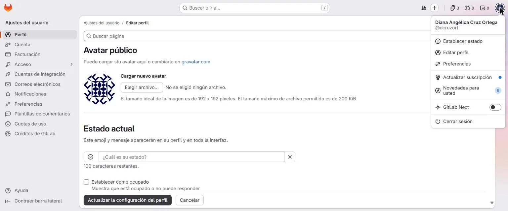
Menú del avatar. - En Nombre (Full name) escriban su nombre y apellidos tal como aparecen en el aula virtual, y guarden con Actualizar la configuración del perfil (Update profile settings), al final de la página.
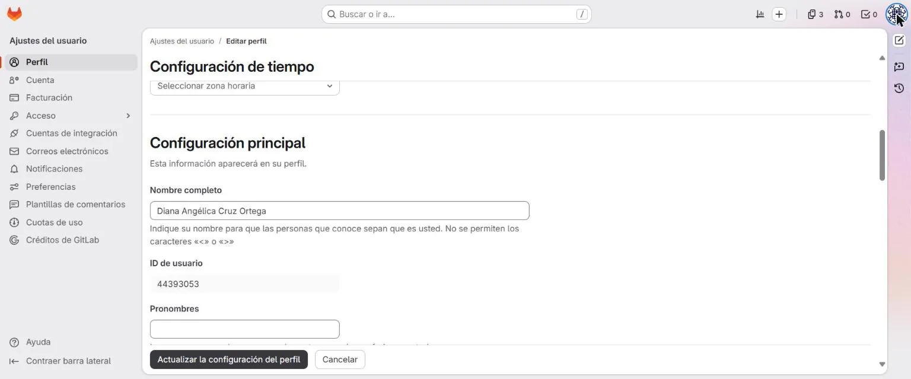
El nombre es el que aparece en todos sus registros. - Compartan con su equipo su nombre de usuario, el que aparece con
@debajo de su nombre al seleccionar el avatar. Con ese usuario los van a agregar al grupo.
Notificaciones
GitLab envía avisos al correo con el que crearon la cuenta. Por eso conviene usar el correo institucional: allí les llegan los avisos del proyecto junto con los del curso.
Con la configuración inicial, el nivel Participar (Participate), reciben avisos cuando:
- les asignan una tarea, un requisito o un acta;
- alguien los menciona con su
@usuario; - hay comentarios o cambios en un elemento de trabajo en el que participan, por ejemplo uno que crearon o en el que comentaron.
Los niveles disponibles son:
| Nivel | Qué notifica |
|---|---|
| Participar (Participate) | Lo descrito arriba. Es el nivel recomendado. |
| Ver (Watch) | Casi toda la actividad del grupo o del proyecto. Útil para el líder del equipo, aunque genera muchos correos. |
| En mención (On mention) | Solo los comentarios en que los mencionan. |
| Personalizado (Custom) | Lo de Participar más los eventos que cada uno elija. Por ejemplo, el aviso de que una tarea suya vence al día siguiente (Issue due). |
| Deshabilitado (Disabled) | Ningún aviso. No lo usen en el grupo del equipo. |
Para revisarlo: avatar > Editar perfil (Edit profile) > Notificaciones (Notifications). Allí ven el correo al que llegan los avisos, el nivel general y el nivel de cada grupo.
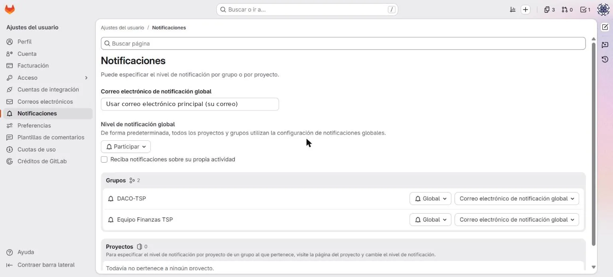
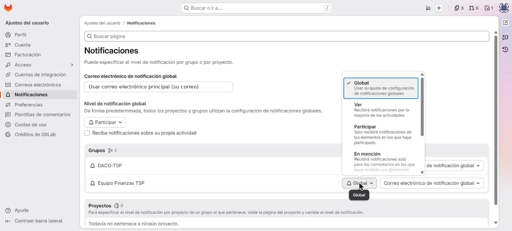
Grupo del equipo
Qué es y para qué sirve. Un equipo TSP tiene integrantes claramente definidos (Lectura 2, sección 5). En GitLab el equipo es un grupo: reúne a los integrantes y contiene el proyecto. Quien pertenece al grupo puede trabajar en el proyecto.
Cómo se hace
- Seleccionen el botón + de la barra superior y elijan Nuevo grupo (New group). Luego seleccionen Crear grupo (Create group).
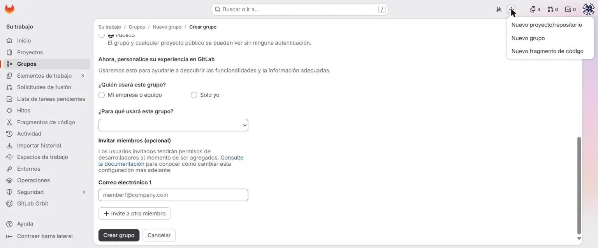
Inicio del formulario de creación del grupo. - En Nombre del grupo (Group name) escriban el nombre del equipo. GitLab completa la dirección del grupo. En Nivel de visibilidad (Visibility level) elijan Privado (Private).
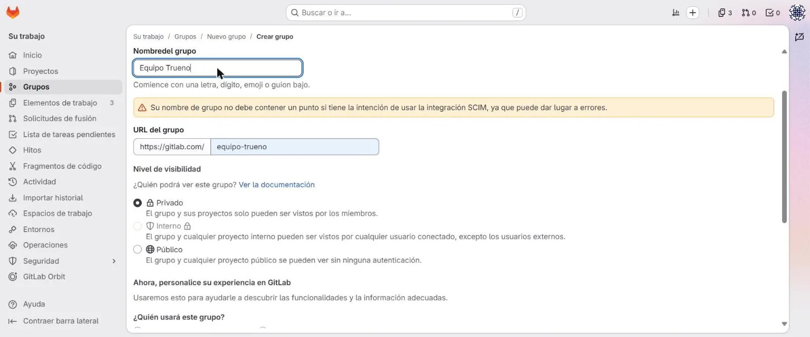
Nombre del grupo, dirección y visibilidad privada. - En ¿Quién usará este grupo? elijan Mi empresa o equipo. Las demás preguntas son opcionales. Seleccionen Crear grupo.
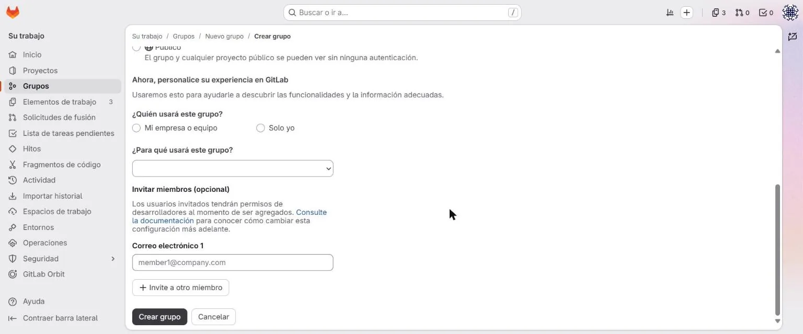
Final del formulario.
Integrantes y permisos
Qué es y para qué sirve. Al grupo se agregan los demás integrantes con un rol de GitLab, que define qué puede hacer cada uno en la herramienta. Este rol es distinto del rol TSP (líder, gerente de planeación, etc.): el rol de GitLab da permisos, y el rol TSP define responsabilidades en el equipo. Los roles TSP se registran en la wiki, en la sección Wiki del equipo.
Cómo se hace
- Dentro del grupo, vayan a Gestionar (Manage) > Miembros (Members) y seleccionen Invitar miembros (Invite members).
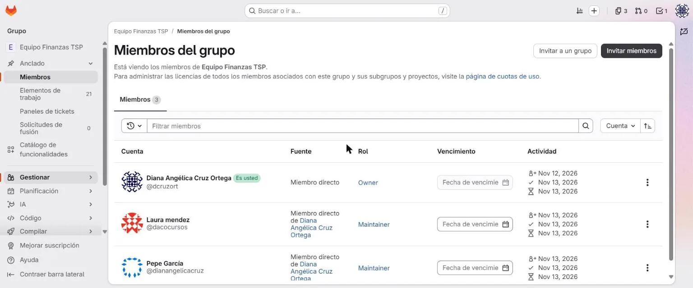
Página de miembros con el botón Invitar miembros. - Escriban el nombre de usuario de cada compañero. GitLab muestra cuántos cupos quedan: un grupo privado gratuito admite máximo cinco integrantes.
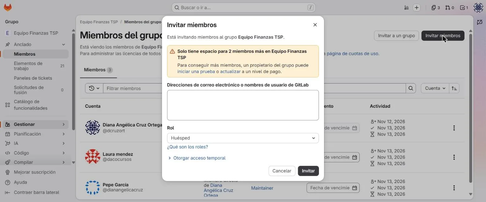
Diálogo de invitación con el aviso de cupos disponibles. - En Rol elijan Encargado de mantenimiento (Maintainer) para todos. Con este rol cada uno puede crear elementos de trabajo, editar la wiki, crear ramas e integrar código. Seleccionen Invitar.
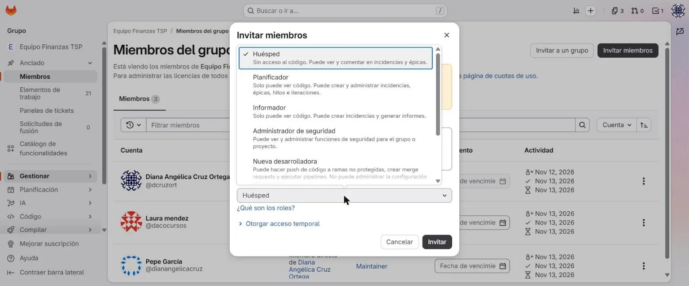
La lista de roles; bajen hasta Encargado de mantenimiento. - Cada compañero aparece en la lista de miembros y recibe un correo de aviso. Si alguno no aparece, revisen que el nombre de usuario esté bien escrito.
Cómo se relacionan los roles de TSP con GitLab
En GitLab todos tienen los mismos permisos, para que nadie dependa de otro para registrar su trabajo. Quien crea el grupo queda como Propietario (Owner), el único que puede agregar o retirar integrantes y cambiar la configuración del grupo. Por eso conviene que lo cree el gerente de soporte, que en TSP responde por las herramientas del equipo y la gestión de la configuración (Lectura 3, sección 2.2).
Cada rol TSP tiene, además, responsabilidades concretas dentro de GitLab:
| Rol TSP | De qué se encarga en GitLab |
|---|---|
| Líder del equipo | Que cada reunión tenga su acta; revisar con el equipo la página del hito de cada semana. |
| Gerente de planeación | Hitos, tareas con estimación, fechas y responsable; seguimiento del tiempo dedicado frente al estimado. |
| Gerente de desarrollo | Requisitos con sus criterios de aceptación; más adelante, el código y su integración. |
| Gerente de calidad y proceso | Etiquetas y plantillas; registro de defectos y que todos registren su tiempo con la fase. |
| Gerente de soporte | Grupo, integrantes, proyecto y repositorio; ayudar a los compañeros con la herramienta. |
Proyecto
Qué es y para qué sirve. El proyecto es el lugar donde queda todo el trabajo del equipo: los requisitos, las tareas, el tiempo, las actas, la wiki y el código. Se crea dentro del grupo para que todos los integrantes tengan acceso.
Cómo se hace
- Desde la página del grupo, seleccionen Crear proyecto (Create project) y elijan Crear proyecto en blanco (Create blank project).
- En Nombre del proyecto (Project name) escriban el nombre del producto que van a construir. Verifiquen que en URL del proyecto aparezca el grupo del equipo. En Nivel de visibilidad elijan Privado.
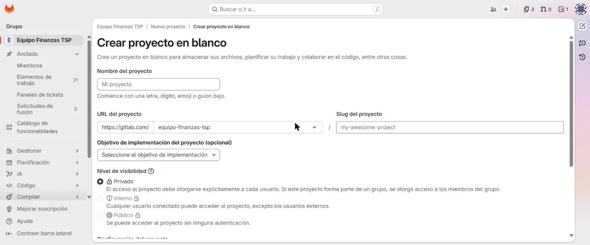
La URL del proyecto debe empezar por el grupo del equipo. - Dejen marcada la opción Inicializar el repositorio con un README (Initialize repository with a README) y seleccionen Crear proyecto.
Hitos: las semanas del ciclo
Qué es. En TSP el calendario del plan se organiza por semanas, y en cada semana el equipo compromete un conjunto de tareas (Lectura 5, sección 4.4). En GitLab cada semana del ciclo es un hito (milestone), con su fecha de inicio y su fecha de fin.
Para qué sirve. Cada tarea se asigna al hito de la semana en que se va a hacer. Así la página de cada hito muestra lo comprometido para esa semana, cuánto avanzó y cuánto tiempo se dedicó frente a lo estimado. Es la base del seguimiento semanal.
Cómo se hace
- Vayan a Planificación (Plan) > Hitos (Milestones) y seleccionen Nuevo hito (New milestone).
- En Título escriban
Semana N, con el número de la semana del curso. En Fecha de inicio y Fecha de vencimiento pongan el primer y el último día de esa semana, según el calendario del curso. Seleccionen Crear hito, al final del formulario.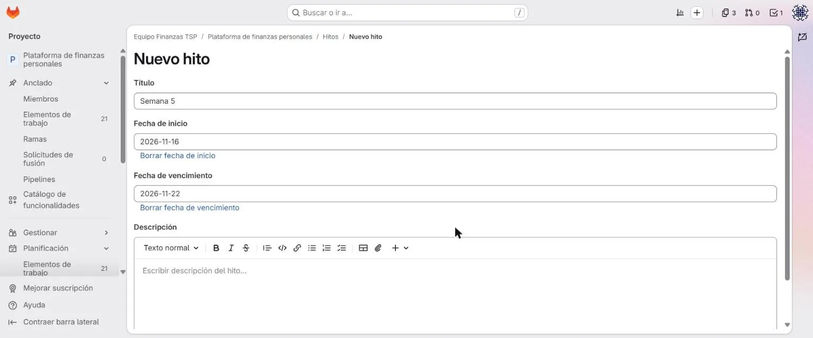
Un hito por semana, con fecha de inicio y de fin. - Repitan el paso anterior para cada semana, desde la semana en que empiezan a trabajar en GitLab hasta la última semana del curso. Al terminar, la lista muestra todos los hitos con sus fechas y su avance.
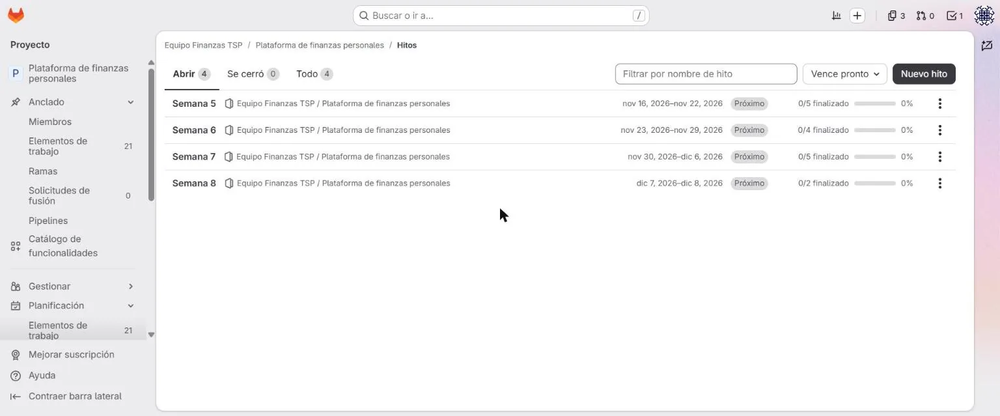
Lista de hitos: cada fila muestra las fechas y cuántas tareas de esa semana están terminadas.
Etiquetas
Qué es. Una etiqueta (label) es una marca que clasifica los elementos de trabajo. En TSP los registros se clasifican para poder contarlos y analizarlos: requisitos, tareas, actas, defectos por tipo y por fase.
Para qué sirve. Con las etiquetas pueden filtrar la lista, por ejemplo ver solo los requisitos o solo las actas, y al descargar los datos cada registro lleva su clasificación.
Etiquetas de esta etapa
| Etiqueta | Descripción sugerida |
|---|---|
requisito | Requisito del producto: historia de usuario con criterios de aceptación |
tarea | Tarea del plan |
relanzamiento | Acta de una sesión del relanzamiento |
reunion-semanal | Acta de la reunión semanal |
defecto | Defecto encontrado en un producto del proyecto |
Escriban los nombres exactamente así, en minúsculas y sin tildes en reunion-semanal, para que todos los equipos usen la misma clasificación.
Cómo se hace
- Vayan a Gestionar (Manage) > Etiquetas (Labels) y seleccionen Nueva etiqueta (New label).
- Escriban el nombre en Título (Title), la descripción y elijan un color. Seleccionen Crear etiqueta.
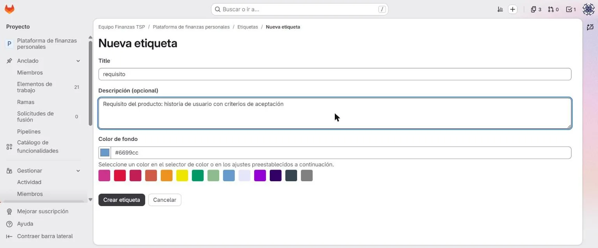
Nombre, descripción y color de la etiqueta. - Repitan para las cinco etiquetas. La página Etiquetas las muestra todas.
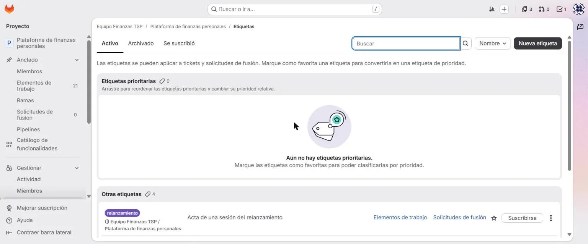
Lista de etiquetas del proyecto.
Plantillas
Qué es. En TSP los registros siguen formatos definidos: actas de reunión, reportes semanales, registros de defectos (Lectura 2, sección 3). En GitLab un formato es una plantilla de descripción (description template): un texto que se carga en la descripción de un elemento de trabajo nuevo, con los campos que hay que diligenciar.
Para qué sirve. Con una plantilla todos registran los mismos datos, en el mismo orden, sin tener que recordar el formato. Una plantilla puede, además, poner sola su etiqueta al crear el elemento.
Cómo funciona. Una plantilla es un archivo de texto en formato Markdown (.md) guardado en la carpeta .gitlab/issue_templates del repositorio. El nombre del archivo es el nombre con que aparece la plantilla en la lista Elegir una plantilla (Choose a template). Si la última línea del archivo es /label ~nombre, GitLab pone esa etiqueta al crear el elemento.
Plantilla que se les entrega: acta de relanzamiento
Creen el archivo .gitlab/issue_templates/acta-de-relanzamiento.md con este contenido:
Cargando la plantilla…
También pueden descargar el archivo.
Cómo se crea el archivo
- En la página principal del proyecto, seleccionen el botón + que está junto al nombre de la rama
mainy elijan Nuevo archivo (New file).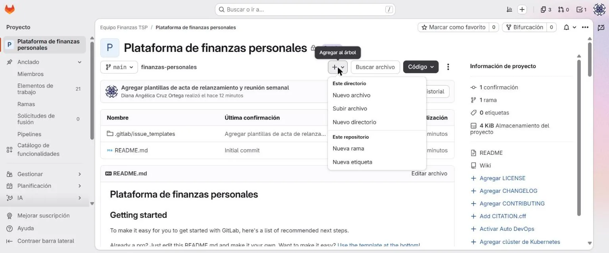
Menú para agregar archivos al repositorio. - En el campo del nombre escriban la ruta completa:
.gitlab/issue_templates/acta-de-relanzamiento.md. Al escribir cada/, GitLab crea la carpeta.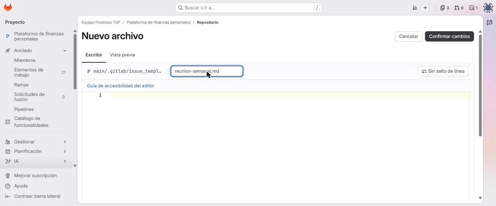
La ruta queda a la izquierda y el nombre del archivo en el campo. - Peguen el contenido de la plantilla en el editor. Seleccionen Confirmar cambios (Commit changes), escriban un mensaje como
Agregar plantilla de acta de relanzamientoy confirmen sobre la ramamain. - Para comprobarla, creen un elemento de trabajo nuevo: la plantilla debe aparecer en la lista Elegir una plantilla (Choose a template).
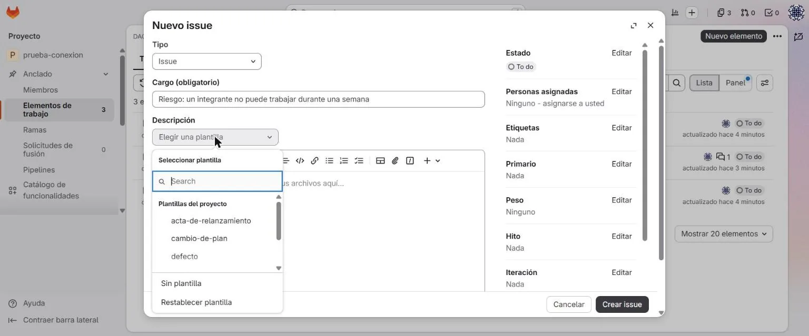
Las plantillas del proyecto aparecen en esta lista.
Ejercicio: la plantilla de la reunión semanal
Ahora el equipo crea su propia plantilla, .gitlab/issue_templates/reunion-semanal.md, para registrar la reunión semanal. Tomen como modelo la del acta de relanzamiento. Debe incluir:
- Una tabla con semana, fecha, hora de inicio y de finalización, modalidad y lugar o enlace, quién moderó, asistentes, y ausentes con su motivo.
- Una sección para revisar los compromisos de la reunión anterior.
- Una tabla de estado del proyecto con horas planeadas, horas dedicadas y tareas terminadas, de la semana y acumuladas.
- Una sección de reportes por rol, con la indicación de que cada integrante agrega un comentario con su reporte: rol, horas trabajadas en la semana, tareas terminadas, tareas para la próxima semana, novedades del rol y dificultades.
- Tablas de decisiones tomadas y de compromisos (compromiso, responsable, fecha límite y tarea relacionada).
- Como última línea,
/label ~reunion-semanal.
Así se escribe una tabla en Markdown: la primera fila tiene los títulos de las columnas, la segunda separa los títulos del contenido, y cada fila siguiente es un renglón de la tabla.
| Campo | Registro | | --- | --- | | Semana | | | Fecha | |
Al terminar, comprueben la plantilla igual que la del acta: creen un elemento de trabajo nuevo y elíjanla en la lista. Si la tabla no se ve como tabla, revisen que cada fila empiece y termine con |.
<!-- y --> es un comentario: se ve al diligenciar la plantilla y no aparece en el elemento publicado. Úsenlo para dejar instrucciones a quien la diligencie.Wiki del equipo
Qué es. La wiki (Wiki) es un conjunto de páginas del proyecto que todos los integrantes pueden editar, y que guarda el historial de cada cambio. Es el lugar de los documentos del equipo.
Para qué sirve. Aquí migran la información de la Entrega 1 que sigue vigente: el planteamiento del proyecto y la conformación del equipo. Al quedar en la wiki, el equipo la actualiza en cada ciclo y queda el registro de cómo evolucionó.
Páginas de esta etapa
| Página | Contenido | De dónde sale |
|---|---|---|
| Planteamiento del proyecto | Producto, cliente, objetivo del ciclo, alcance y lo que queda fuera del alcance | Sección 1 del Plan de lanzamiento, actualizada |
| Equipo y roles | Integrantes con su usuario de GitLab y sus roles TSP, metas de cada rol, disponibilidad semanal y acuerdos de trabajo | Sección 2 del Plan de lanzamiento, actualizada |
Cómo se hace
- Vayan a Planificación (Plan) > Wiki. Si la wiki está vacía, seleccionen Crear su primera página; si ya tiene páginas, seleccionen Nueva página (New page).
- Escriban el título de la página y su contenido. El editor permite tablas, listas y títulos con la barra de herramientas. Pueden copiar las tablas del Plan de lanzamiento y pegarlas; si una tabla no queda bien, créenla con el botón de tabla de la barra de herramientas y copien el contenido celda por celda.
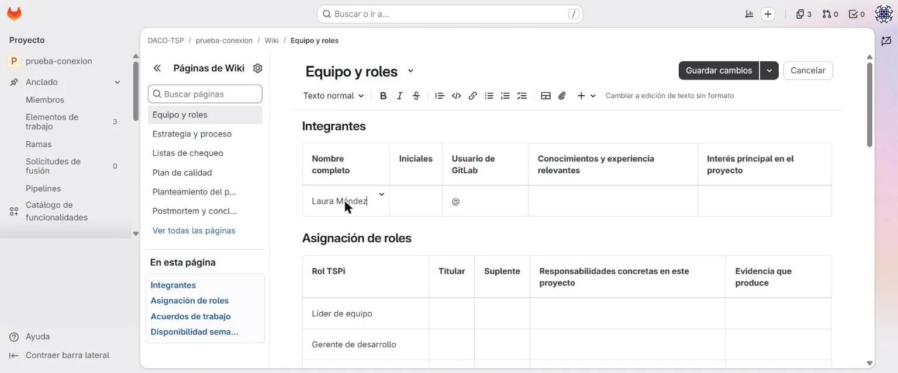
Editor de la wiki. - Seleccionen Crear página (Create page). Para cambiarla después, abran la página y seleccionen Editar (Edit).
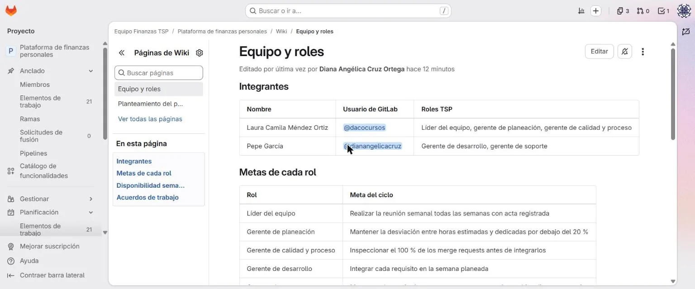
Ejemplo de la página Equipo y roles: integrantes, usuarios de GitLab y roles TSP.
Verificación de la etapa
Antes de pasar a la etapa 2, revisen que su proyecto tenga:
- Todos los integrantes en Miembros, con el rol Encargado de mantenimiento y su nombre completo.
- Un hito por cada semana del ciclo, con sus fechas.
- Las etiquetas
requisito,tarea,relanzamiento,reunion-semanalydefecto. - Las plantillas
acta-de-relanzamientoyreunion-semanalen la lista Elegir una plantilla. - Las páginas de la wiki Planteamiento del proyecto y Equipo y roles.
Pueden ver un proyecto completo de ejemplo en las imágenes de este manual: corresponde a una plataforma de finanzas personales construida por un equipo de dos integrantes.